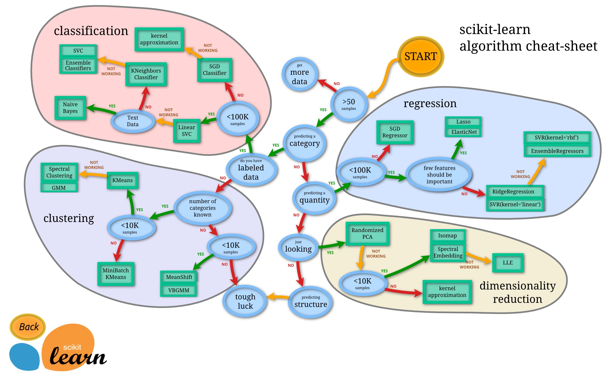

sklearn 全称 scikit learn 是机器学习领域当中最知名的python模块之一
sklearn 包含了很多种机器学习的方式：
- Classification 分类
- Regression 回归
- Clustering 非监督分类
- Dimensionality reduction 数据降维
- Model Selection 模型选择
- Preprocessing 数据预处理
选择模型
sklearn 中包含了众多的学习模型，我们需要根据实际问题选择适合的模型
这里有一张官网流程图帮助大家，根据实际问题，选择合适的模型

这里，本人还未完全熟悉所有学习方式，拷贝了sam‘s note 的相关链接
- 2017/06/11 【1】简介--1--机器学习
- 2017/06/11 【1】简介--2--sklearn简介
- 2018/08/14 【2】监督学习
- 2017/06/14 【2】监督学习--1--分类
- 2018/08/28 【2】监督学习--1--分类-K近邻分类器
- 2018/08/28 【2】监督学习--1--分类-决策树(DecisionTreeClassifier)
- 2018/08/28 【2】监督学习--1--分类-贝叶斯(naive_bayes)
- 2018/08/28 【2】监督学习--1--分类-支持向量机(svm)
- 2017/06/15 【2】监督学习--2--回归
- 2018/08/22 【2】监督学习--3--多项式变形--PolynomialFeatures
- 2017/06/11 【3】无监督学习概述
- 2017/07/08 【3】无监督学习--3--聚类--概述
- 2018/07/05 【3】无监督学习--3--聚类--基于距离--kmeans
- 2017/07/08 【3】无监督学习--3--聚类--层次聚类
- 2018/05/16 【4.1.1】模型选择与评估--1--交叉检验（Cross Validation）
- 2018/08/17 【4.3.1】量化预测结果
- 2018/09/21 【4.3.2.3】量化预测结果--分类变量--准确率，召回和F-措施
- 2018/09/21 【4.3.2.1】量化预测结果--分类变量
- 2018/07/05 【4.3.2.9】量化预测结果--分类变量--MCC、RI
- 2017/02/07 【4.3.2.2】量化预测结果--分类变量--ROC曲线和AUC评价指标
- 2018/08/17 【4.4.1】模型的保存与调用
- 2018/08/17 【4.5.1】验证曲线--欠拟合和过拟合
- 2018/08/17 【4.5.2】验证曲线--绘制验证曲线
- 2018/08/17 【4.5.3】验证曲线--绘制学习曲线
- 2018/05/13 【5】数据集转化--3--预处理数据-One Hot Encoding in Scikit-Learn
- 2017/07/07 【9】例子--1--general--Plotting Cross-Validated Predictions（交叉验证预测）
- 2017/07/08 【9】例子--1--general--混合多重方法获得feature
- 2017/07/08 【9】例子--1--general--PCA与逻辑回归的搭配
- 2017/07/07 【9】例子--1--general--保序回归(Isotonic Regression)
- 2017/07/07 【10】报错-1-Mac运行sklearn的matplotlib问题